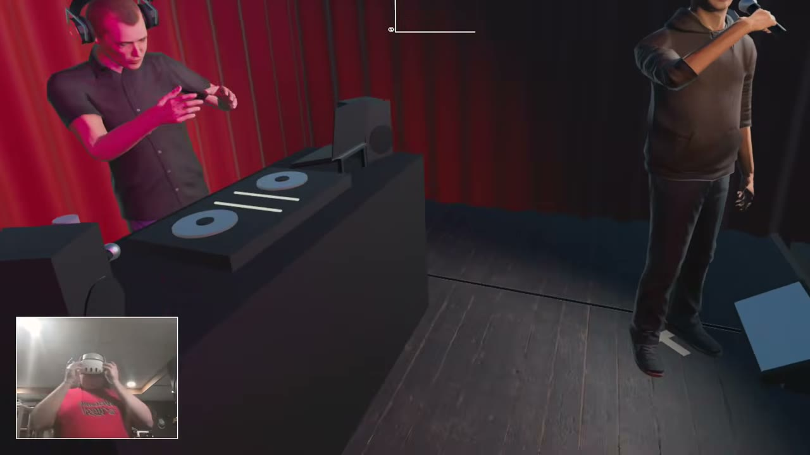

Portfolio 2 · Demo 05
Freestyle Simulator
Step onto a club stage, grab a mic, and trade bars with AI MCs while a DJ, crowd, and tug-of-war scoreboard react to the battle.
About the project
Five MCs listen to your rap, react through facial expressions and motion-capture animation, and deliver voiced comebacks. Live transcription and scoring consider punchlines, rhymes, and flow.
Customize a hovering robot avatar in the dressing-room mirror, choose a beat, and take the stage. Point at your opponent or raise your hands to hype the crowd.
Try it
Play the browser version on a phone or computer, or install the Quest APK from the release. Both use the AI server; access requires a password. See the project README for setup and access details.
